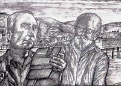
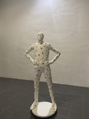
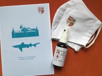
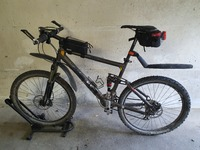
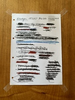
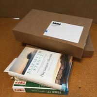
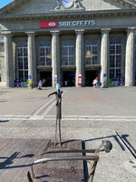

Static archive of a former Omeka site (snapshot 2026-11-24). Search and interactive features are not available.
⌂
Contribuer
Témoignages
Visualisations
Cartes postales
À propos
Deutsch
Italiano
Contenus
de 32
1–25 sur 776
Recherche avancée
Corona (Delta): Leider hat es auch mich und meine Familie "erwischt"...
DAS MESSER - Eine Geschichte aus dem Lockdown
DAS MESSER - Eine Geschichte aus dem Lockdown
DAS MESSER 2: JOHN`S WAY DOWN
On The Road of 17. Juni
Tagebuchaufzeichnungen 5. bis 8. August 2020
Der Riesenschmetterling von Berlin-Charlottenburg
In der Coronazeit stehengeblieben
IN DER CORONAZEIT STEHENGEBLIEBEN

Vrai héros
Bundesratsfoto
Egola

Dreibeiniges-Ding
Ersti Welle - Lockdown Gummizeue
Corona-Zunftausflug

Schnupfen während der Pandemie
Fahrten über Land, Mountainbike wieder entdeckt.

Done: die To do-Liste

Medienlieferservice

Bücher lesen ("Wirbellos")
#Shortnote Coronageschehnisse
Corona
Corona
Corona
Corona-Zombie in Biel

de 32
1–25 sur 776